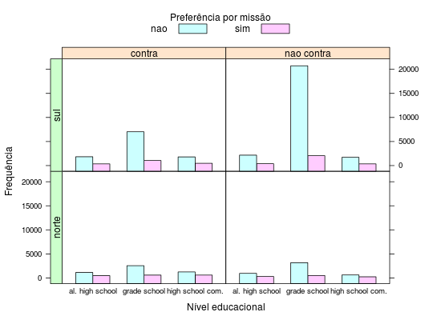

Em um estudo sobre a avaliação de políciais militares brancos por soldados americanos negros na Segunda Guerra Mundial, os soldados do exército foram classificados segundo o nível educacional, a atitude face à separação racial, a região de naturalidade e a preferência por missões de combate.
Um data.frame com 24 observações e 5 variáveis, em que
educsepnturmissaofreqPAULINO; SINGER (2006), Exercício 9.30, pág. 344.
data(PaulinoEx9.30) str(PaulinoEx9.30)#> 'data.frame': 24 obs. of 5 variables: #> $ educ : Factor w/ 3 levels "al. high school",..: 2 2 2 2 2 2 2 2 1 1 ... #> $ sep : Factor w/ 2 levels "contra","nao contra": 2 2 2 2 1 1 1 1 2 2 ... #> $ natur : Factor w/ 2 levels "norte","sul": 2 2 1 1 2 2 1 1 2 2 ... #> $ missao: Factor w/ 2 levels "nao","sim": 2 1 2 1 2 1 2 1 2 1 ... #> $ freq : int 2051 20738 518 3182 1050 7027 600 2558 382 2165 ...xt <- xtabs(freq ~ ., data = PaulinoEx9.30) ftable(xt)#> missao nao sim #> educ sep natur #> al. high school contra norte 1141 489 #> sul 1832 349 #> nao contra norte 960 320 #> sul 2165 382 #> grade school contra norte 2558 600 #> sul 7027 1050 #> nao contra norte 3182 518 #> sul 20738 2051 #> high school com. contra norte 1256 609 #> sul 1798 478 #> nao contra norte 630 245 #> sul 1714 351library(lattice) library(latticeExtra) useOuterStrips( barchart(freq ~ educ | sep + natur, groups = missao, horizontal = FALSE, data = PaulinoEx9.30, auto.key = list(space = "top", columns = 2, cex.title = 1, rectangles = TRUE, points = FALSE, title = "Preferência por missão"), xlab = "Nível educacional", ylab = "Frequência") )